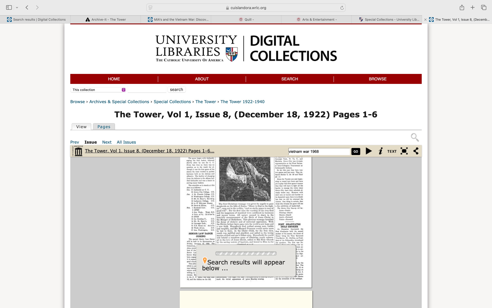

For LSC 555 Assignment 2, I am conducting a system analysis and usability test of the archive of Catholic University of America’s student newspaper The Tower from 1922-2018. This assignment examines the archive’s online access system from the hypothetical perspective of a teacher of undergraduate students, and undergraduate students themselves who wish to use the online archive of The Tower to conduct some basic research on an example topic. I’ve decided to analyze The Tower Archive from 1922-2018: First, I analyze the system using the framework of Nielsen’s Heuristics for User Interface Design and summarize the primary strengths and weaknesses of the system from this vantage point. Next, I conduct a mini-usability test with a volunteer system user conducting two basic tasks in using the system. Finally, I consider the comparative value of these two different approaches of system analysis.
The following table demonstrates some basic example inputs and outputs which I observed while using the system.
| Example system input | Corresponding example system output |
|---|---|
| User scrolls mouse over highlighted sub-categories at top of page | The sub-category hovered over has its background highlighted in blue |
| User clicks on one of the 5 displayed date ranges at bottomf of page | A table is displayed showing possible limiters by year, month, and specific issues of the newspaper. |
| User clicks on a specific date / issue from the table | The browser opens a page that has an imbedded viewer for the specific issue selected |
| User inputs search term into search field while browsing a specific issue from the browser's embedded viewer | System highlights all incidents of the search term that appear in the currently viewed archive issue. |
Hit blips: this image shows orange location indicators at the bottom of the viewer interface showing where a searched term appears in the currently viewed issue of the paper.
I started my analysis of The Tower Archive online system by considering each of the 10 guidelines from Nielsen’s Heuristics for User Interface Design. A summary of my basic observations for each of the ten considerations follows.
Overall, the system does display some basic, straightforward information on the system status. For example, when selecting a search limiter, there is a location status indicator which demonstrates where in the collection the user is currently situated, and a home button is clearly displayed near the top left of every screen. However, there are some problematic issues which are brought to my attention when considering this first heuristic evaluation measure. The home button returns the user to the University Libraries Digital Collection page—not The Tower Archives, which is not immediately obvious, and can be a bit confusing. What is more problematic, is the display of a small blue question mark icon when the image of a scanned page is loading or has failed to load. There is not a status or load indicator, and when a page fails to load, no explanation is displayed. On the other hand, when conducting a search, while the system loads the results, a search status image is displayed as is demonstrated in the following image.
The system uses familiar language rather than jargon, and results are displayed in a logical fashion using chronological order and search relevance criteria. While the meaning of some selection limiters is not entirely evident, overall, this heuristic measure demonstrates a positive side of the system.
The site is relatively easy to navigate, and the user can easily go back, or choose to return home. I do not see any major concerns that encumber user freedom, other than the unfortunate disadvantage that when browsing and searching, the user can easily leave “The Tower” collection without being fully aware that they are no longer viewing archived items exclusively from “The Tower.”
The site is both internally consistent, and consistent with larger external standards web users have come to expect. There is not a heavy cognitive load. When viewing a specific issue of The Tower, relatively self-evident icons control the interface, and when the user hovers with the mouse over one of these buttons, a helpful plain-text explanation is displayed.
The only real context in which there is real potential for slips (unconscious errors caused by inattention) is when a user searches for a specific search term. The interface includes a spell check that suggests correction to basic spelling errors, and also allows the user to reject or undo the generated spelling correction. The search function does not seem to include indexed subject metadata or a controlled vocabulary, so I do not consider mistakes (conscious errors based on a mismatch between the user’s mental model and the design) as being a major concern here.
The system does not overcharge the user’s memory load. It makes actions and options visible. However, it is not always easy to find a page or article a user might have previously viewed.
The use of shortcuts in the system are adequate, but not impressive.
The interface does not contain irrelevant or rarely needed information, for the most part. However, the filter information on the left of the page is not particularly helpful.
The system is very helpful in that it incorporates spellcheck and suggests corrections or alternatives in the search field. However, many archived issues of the paper are not recorded as text. When a user attempts to search one of these issues via the embedded viewer’s search box, the system generates an error message that the term could not be found. While it is helpful to display the error message—the content of the message does not help the user correct the error or find a solution.
Pop-up explanations of what buttons in the browser signify are helpful. Search results seem accurate, but typically only refer to a specific issue of the paper that includes the search criteria. In-depth search functions and explanations of how the results are generated are not available, but if they were included, this could greatly improve the user experience of conducting research using this system.
For the mini-usability test, I observed a friend while he used “The Tower” Archive to observe briefly how the paper has changed over the years, and then to search for two articles that might reflect campus attitudes toward World War II, and two articles reflecting campus attitudes regarding the Vietnam War. My friend works for Amazon Web Services conducting system security audits, and is thus very knowledgable with web based systems like this one. It quickly became apparent that he became frustrated while using the system. My observations as well as his survey have been posted with my assignment on the Brightspace platform for this assignment.
It is my opinion that the most important feedback in this context comes from the usability test. While the heuristics provide a helpful framework by which an evaluator can determine a qualitative assessment of a website, in this context, the heuristic evaluation tends to focus on basic aesthetic principles of the site and the functional navigation of the pages and information within the site. This is important, and the heuristic evaluation indicates that the site is rather well designed, and will be familiar in format and relatively simple to navigate for the average user. However, the usability test really hones in on the purpose of this task in the specific context in which a teacher and students might use the site in an attempt to locate specific information. The usability test very quickly brings to focus what is in my opinion the greatest weaknesses of The Tower Archive: there is a lack of metadata for the this archived content. This could be remedied, with reasonable work: If basic subject information could be applied to the individual archived issues including index information of the articles included in a given issue, then a student or teacher might better be able to find specific articles that would be valuable to the classroom context of this assignment and task. Even if the site were perfectly designed according to Nielsen’s Heuristics, without this added subject metadata to index the archived articles within an issue, the only effective way for students and teachers to meet the requirements of the assignment would be to browse all issues for the range of dates relevant to the topic at hand, and possibly to search for the use of specific terms within an issue. This is a rather unruly expectation which would require a great deal of work. While searching for basic words within the archive yield some helpful results, the search is still rather tedious and not particularly insightful. Metadata providing the possibility of a broader keyword search would greatly improve user experience with the system.
Both evaluation systems provide helpful feedback for improving the system. The Heuristics provide simple guidelines to help improve the appearance and functionality of the system. However, the usability test really focuses in quickly on what is not working adequately and what needs to be addressed immediately (without necessarily demonstrating how this aspect can be improved). However, I recognize that the implementation of usability tests create a greater amount of preparation and analysis, and thus would increase potential costs associated with system evaluation.